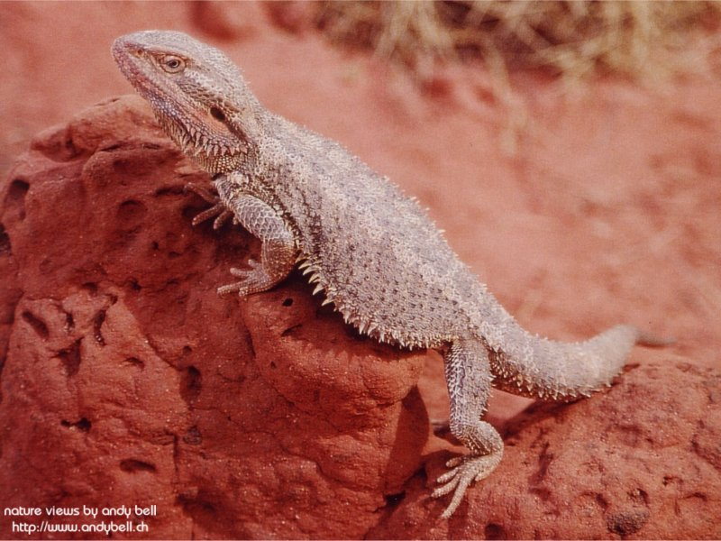

What would you do If a bearded dragon randomly appeared in your house?
Why in god's name did you make a thread about this? Why?
Well geez I don't know why is your name frogs.
I was bored I got home and found a gecko in the kitchen so why not ask a question about this.....but make the animal BIGGER!!!
plus I am thinking about getting one so that is on my mind too.
I was bored I got home and found a gecko in the kitchen so why not ask a question about this.....but make the animal BIGGER!!!
plus I am thinking about getting one so that is on my mind too.
O_o
I don't know whether to laugh, silently blink, or just call a mod to lock this.
A dragon appearing in my house with the intent of destroying it would be almost as bad as LV leaving. So I would pray to God that it's just a dream.
I don't know whether to laugh, silently blink, or just call a mod to lock this.
A dragon appearing in my house with the intent of destroying it would be almost as bad as LV leaving. So I would pray to God that it's just a dream.
Um... A bearded Dragon Is a king of Pet! Its a pet lizard 
wow.... He he I can't stop laughing!
wow.... He he I can't stop laughing!

Well, if it was a bearded dragon...
I would ask the creature if it was either LV or Borealis, and then proceed to inquire why the dragon got the species changing operation...
I would ask the creature if it was either LV or Borealis, and then proceed to inquire why the dragon got the species changing operation...
Drink some more until I see another one.
Drink some more until I see another one.
LMAO
Actually, I think the literal translation of the Latin word for "dragon" is "evil lizard". That type of lizard isn't evil.
Well, I immediately had the image of a dragon with a thick brown beard. Just me, I suppose.
I would put poor Anakin back in his tank.
You're such a stupid lizzard- yes you are! Yes you-
*ahem*
...
Anakin is his name because of Starwars. We figured that They're both from the desert, and bearded dragons are actually the only other creatures that wave to say "What's up?" We figured it was like the Jedi mind trick.
You're such a stupid lizzard- yes you are! Yes you-
*ahem*
...
Anakin is his name because of Starwars. We figured that They're both from the desert, and bearded dragons are actually the only other creatures that wave to say "What's up?" We figured it was like the Jedi mind trick.
Well, I immediately had the image of a dragon with a thick brown beard. Just me, I suppose.
ya... me too
Anakin is his name because of Starwars. We figured that They're both from the desert, and bearded dragons are actually the only other creatures that wave to say "What's up?" We figured it was like the Jedi mind trick
ahaha
Bah! Viva la dragon thread.